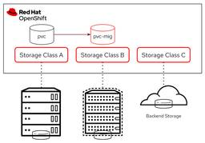
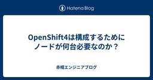
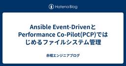
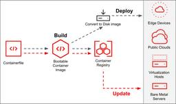

赤帽エンジニアブログ
https://rheb.hatenablog.com/
レッドハット株式会社のエンジニアがオープンソーステクノロジーについての最新の情報を発信するブログ。LinuxからOpenStack、OpenShift、Ansibleなどの情報を発信しています。
フィード

OpenShift の Storage Class Migration
赤帽エンジニアブログ
※この記事は OpenShift Advent Calendar 2024 の 20日目の記事です。 qiita.com こんにちは、ストレージと OpenShift を生業にしているうつぼ（宇都宮）です。ご無沙汰しております。 ここ最近というかこの一年はすっかり OpenShift Virtualization（OCP-V）の小僧として活動させていただいております。 お陰様で OCP-V は非常に多方面から注目を浴びております。ありがとうございます。 さて。OCP-V は仮想マシンのライブマイグレーションができることで知られていますが、ストレージのライブマイグレーションにはこれまで対応してい…
3時間前

OpenShift4は構成するためにノードが何台必要なのか？
赤帽エンジニアブログ
はじめに はじめまして、Red HatでOpenShift Container Platformのテクニカルサポートの野間です。OpenShift Advent Calendar 2024 の12/19の記事ですが、遅れてしまいました。申し訳ありません。 本日はOpenShift Container Platformでサポートされるノード構成について、現在の情報を整理してお伝えします。というのも、リリースから5年の進化をとげ、選択できる構成が格段に増えました。これにより、初学者にとって「結局、何台のサーバー（インスタンス）が必要なのか」が製品ドキュメントから理解しづらくなったと思います。 co…
5時間前

Ansible Event-DrivenとPerformance Co-Pilot(PCP)ではじめるファイルシステム管理
赤帽エンジニアブログ
こんにちは。Red Hatの呉と申します。普段はAnsible Automation Platform製品のテクニカルサポートエンジニアをしております。 今回は題名の通り、Ansible Event-DrivenとPerformance Co-Pilot(PCP)を使ったファイルシステム管理について紹介したいと思います。 Linuxサーバーを使っていたら、いつのまにかファイルシステムがいっぱいになっていたという状況は誰しも一度は経験したことがあるかと思います(私だけでしょうか笑)。 検証の最中にサーバーがフリーズしたりして面倒ですし、それだけならまだしも本番環境で発生したら、面倒では済まない事…
1日前

Image Mode for RHEL の構築から管理を Ansible で自動化してみる
赤帽エンジニアブログ
こんにちは。Red Hat ソリューションアーキテクトの清水です。RHEL9からImage Mode for RHELという新しいオペレーティングシステムのデプロイメント方式が導入されていますが、皆さん触ってみたことはありますか？本ブログ記事では、このImage Mode for RHELを使った仮想マシン(VM)を、Ansibleを使ってデプロイからアップデートを自動化する方法についてご紹介してきたいと思います。 Image Mode for RHEL とは 最初に少しおさらいをしておきましょう。Image Mode for RHELは、元々bootcというプロジェクトに端を発しており、RH…
1日前

ROSAでのAWS STSによるAmazon EFS/ECRの利用
赤帽エンジニアブログ
OpenShift Advent Calendar 2024の12/17の記事です。 Red Hatの小島です。 Red Hat OpenShift Service on AWS(ROSA)ではセキュリティを考慮してAWS STS(Security Token Service)を利用したデプロイと運用を推奨しており、ROSA with HCPクラスターをデプロイする際は、AWS STSの利用を必須としています。本記事ではAWSユーザーから聞かれることの多いAmazon EFSとAmazon ECRについて、専用のOperatorからAWS STSの認証情報で利用する方法の概要をご紹介します。な…
4日前
OpenShift AIでマルチノードのLLM推論を試す
赤帽エンジニアブログ
こんにちは、Red Hatでソリューションアーキテクトをしている石川です。 先日OpenShift AIのバージョン2.16がリリースされました。 現在OpenShift AIは非常にハイペースでリリースが行われており、約1ヶ月に一度のペースで機能アップデートが行われています。12月にリリースされたバージョン2.16についても多くの機能が追加されており、その中の一つとしてマルチノードでLLMの推論を行う機能がTech Previewとして追加されました。 docs.redhat.com LLMの推論を行う上で大事な要素として、どれだけのGPUのVRAM（メモリ）を利用できるかがあります。例えば…
5日前

Apache Camel 向け Visual開発ツール Kaoto に Data Mapper(Tech Preview)が
赤帽エンジニアブログ
以前の記事rheb.hatenablog.com で紹介した Apache Camel 向け開発ツールですが、今回は 先日(2024/12/10)リリースされた Kaoto 2.3 に関するご案内です。 ビジュアル Camel エディターとしてアップデートを重ねる Kaoto ですが、今回のマイナーアップデートにも注目すべき機能が多数あります。 特に目立つ機能を２つご紹介します。 1: 製品版 Camel ライブラリーバージョンを選択可能に コミュニティーバージョンだけでなく製品バージョンを指定できますので、より迷うことなく必要なコンポーネントを選びエディットできます。(画像は、Kaotoコミ…
8日前
Camel Karaf から Camel Spring Boot もしくは Camel Quarkus への移行
赤帽エンジニアブログ
Red Hat の古市です。 Red Hat Fuse は 既に End of Life を向かえ、Extended Life cycle support(ELS)の終了も間近に控えています。 https://access.redhat.com/product-life-cycles?product=Red%20Hat%20Fuse 皆さん、Red Hat Build of Apache Camel 4.x への移行はお済みでしょうか？順調に進んでいますでしょうか？ Karaf runtime 上で、 Blueprint XML DSL を使った資産をお持ちの方が多くいらっしゃるかと思いますが…
10日前
OpenShift Virtualization のディスクに関する独り言（CDI関連）
赤帽エンジニアブログ
※この記事は OpenShift Advent Calendar 2024 の 10日目の記事です。 qiita.com こんにちは、ストレージと OpenShift を生業にしているうつぼ（宇都宮）です。ご無沙汰しております。 ここ最近というかこの一年はすっかり OpenShift Virtualization（OCP-V）の小僧として活動させていただいております。 お陰様で OCP-V は非常に多方面から注目を浴びております。ありがとうございます。 OCP-V 小僧の活動は多忙ではありますが、良いところが多くあります。 それは OCP-V のお話をしていると、ほぼ確実にストレージの話題が出…
11日前
Hosted Control Plane を AWS 環境上にデプロイしてみる
赤帽エンジニアブログ
Red Hat で OpenShift をサポートしている Yiyong です。この記事はOpenShift Advent Calendar 2024のエントリです。 qiita.com OpenShift 4.17 バージョンより、OpenShift 公式ドキュメントの Hosted Control Planes (HCP) の章が大幅に充実しましたので、Hosted Control Plane on AWS 公式ドキュメントのステップを参照しながらデプロイしてみました。なお、今回は Managed Service となる ROSA with HCP ではなく、Self-Managed の …
11日前
メッセージ監視を試してみる
赤帽エンジニアブログ
メッセージ監視 はじめに OpenShift Cluster Logging Ruler メッセージ監視の通知先の AlertManager 利用するアプリとメッセージ監視ルール アラート監視の設定の有効化 パターン1: 管理者用の AlertManager への通知 パターン3: 利用者用の AlertManager への通知 まとめ メッセージ監視 はじめに 急に冷え込んできました。OpenShift Advent Calendar 2024 の 7 日目の記事です。先日 5日目の記事でアラート通知先がどのように変えられるかを確認しました。 本日は、Cluster Logging 機能の1…
14日前
OpenShift のアラート通知の設定
赤帽エンジニアブログ
OpenShift のアラート通知の設定 はじめに OpenShift のモニタリングスタック Cluster Monitoring User Workload Monitoring アラート通知のコントロール ケース1 利用者はアラートの設定だけ行いたい ケース2 利用者はアラートの設定も通知先の設定も行いたい ケース3 管理者も多くのアラート通知を行うので、利用者の負荷と分散したい場合 まとめ OpenShift のアラート通知の設定 はじめに この時期にのみ記事を書いている気がしますが、OpenShift Advent Calendar 2024 の 12月5日の記事です。サンタクロース…
15日前
ansible-navigator を使った場合の情報の受け渡し
赤帽エンジニアブログ
Red Hat で Ansible のソリューションアーキテクトをしている中島でございます。 本エントリーは Ansible Advent Calendar 2024 の6日目の記事となります。 Ansible Advent Calendar 2024 にはAnsible 関する様々なTIPSやナレッジが投稿されておりますの、Ansible を触っている方はご一読いただくと、自動化のステップアップのきっかけを得られるかもしれません。 さて、現在の Red Hat Ansible Automation Platform(以下AAP) は Playbook を実行するためにコンテナ環境(Execu…
16日前
Ansible Collectionメンテナの日常(リリース編)
赤帽エンジニアブログ
みなさん今日もメリークリスマス｡昨日に引き続きRed Hatのさいとうです｡Ansible Advent Calendar 2024の､12月5日の記事をお届けします｡ ansible.posix collection version 2.0.0 をリリースしました 僕はサポートチームに所属していますが､表の仕事の障害解析の合間にアップストリームのメンテナの仕事もしています｡こういう境遇の人をRed Hatではよく見かけます｡ Red Hatは､一般社会的には謎に包まれているとはいえオープンソースソフトウェアカンパニーですから､所属している部門や､就いている職種にかかわらず､アップストリームへ…
16日前
パブリッククラウドでのRHELのインプレースアップグレード
赤帽エンジニアブログ
Red Hatの小島です。 クラウドベンダーがサポートする従量課金制RHEL(オンデマンドのRHELインスタンス)では、Red Hat Update Infrastructure (RHUI) というクラウド環境専用のRHELリポジトリを使って、RHELパッケージのダウンロード/インストール/アップデートなどができるように予め設定されています。さらに、AWS/Azure/Google Cloudの従量課金制RHELでは、Red Hat Subscription Management (RHSM) ではなくRHUIを利用して、RHEL7以降のRHELやRHEL with SAP HANAをインプ…
16日前
Ansibleのモジュールやプラグインを修正したいあなたへ(2024年版)
赤帽エンジニアブログ
Ansible Advent Calendar 2024の4日目の記事です｡ みなさんメリークリスマス｡Red Hatのさいとうです｡ 日々Ansibleを使って自動化を推進しているみなさん､｢Ansibleのモジュールやプラグインにオプションを追加してほしい｣､ ｢実行結果の戻り値に自分が必用とする情報を追加してほしい｣､ ｢不具合を修正してほしい｣ といったことを七夕の短冊に書いてお祈りしたり､サンタさんにお願いしたり､IssueとしてCollectionのリポジトリにファイルしたりしたことがありますよね｡僕はよくあります｡ そして最後に､｢もういっそ自分で修正しちゃったほうが楽だわ｣とい…
17日前
OpenShift Logging 6.1のVector AtLeastOnceのログ転送パフォーマンスを確認する
赤帽エンジニアブログ
id:nekop です。この記事はOpenShift Advent Calendar 2024のエントリです。 最初に結論を書いておきます。OpenShift Logging ClusterLogForwarderでのVector AtLeastOnce設定はちょっとログ生成が多いタイミングがあってもログロストしない、ログ転送スループットは10MB/sくらい、対応できるログ生成レートは5k lines/sくらい、です。 vector.dev OpenShift Logging 5.9から ClusterLogForwarder のVectorにTuning項目が指定できるようになっています。6…
17日前
Event-Driven Ansible の重複アラートの抑制機能の紹介
赤帽エンジニアブログ
Red Hat で Ansible のソリューションアーキテクトをしている中島でございます。 本エントリーは Ansible Advent Calendar 2024 の3日目の記事となります。 Ansible Advent Calendar 2024 にはAnsible 関する様々なTIPSやナレッジが投稿されておりますの、Ansible を触っている方はご一読いただくと、自動化のステップアップのきっかけを得られるかもしれません。 さて、Ansible には Event-Drive Ansible(以下EDA)という機能があります。これは、監視システムや分析システムなどの周辺システムからのメ…
18日前
Jakarta EE 10 で MyBatis を使ってみる
赤帽エンジニアブログ
Red Hat で Java 関連を担当している伊藤ちひろです。 本記事は、Jakarta EE 10と一緒に MyBatis を使う方法を紹介します。 MyBatis 自体の使い方は説明しません。 Jakarta EE 10で MyBatis を使う方法に焦点をあてます。 MyBatis は Java SE や Jakarta EE の仕様と連携できます。 本記事では以下の構成で MyBatis を使ってみます。 MyBatis を Contexts and Dependency Injection (CDI) で使えるようにする トランザクション管理は Jakarta Transactio…
1ヶ月前
【Developer Hub 実践｜第1回】Developer Hubをインストールしてみよう
赤帽エンジニアブログ
BackstageをベースとしたInternal Developer PortalであるRed Hat Developer Hubの概要、特徴、そして具体的な実装手順を解説します。これからDeveloper Hubを導入する方や興味がある方に向けた実践的な内容です。
1ヶ月前
Spring BootでApache Camelを始めてみる(formerly Fuse)
赤帽エンジニアブログ
こんにちは。ソリューションアーキテクトの瀬戸です。 今回はApache Camelアプリケーションの開発環境のセットアップをしてサンプルアプリを確認してデプロイまでをしてみたいと思います。 Apache Camelって何よ？って思った人は、蒸野さんが書いているブログ記事：Apache Camel 超入門を参照してください。 rheb.hatenablog.com 以前Red HatではFuseという名前でApache Camelを製品化して販売していました。 今はRed Hat build of Apache Camelという名前で製品化されているのですが、Red Hat build of A…
1ヶ月前
Spring-Bootアプリケーションのbootable jarをOpenShiftにデプロイする
赤帽エンジニアブログ
こんにちは。Red Hatのソリューションアーキテクトの瀬戸です。 OpenShiftはCI/CDに関わる機能も備えており、OpenShift上でGitHub等から直接ソースコードを取得してビルドをし、デプロイすることができます。 しかしながら、すでにGitHub ActionsなどCI/CD基盤が外部に構築されており、OpenShiftをアプリケーション稼働環境としてだけ動作させたい場合もあります。 その場合にどうやってコマンドラインでデプロイするのかについて説明します。 コマンドラインツールのインストール OpenShiftをコマンドラインで操作するためにはoc コマンドが必要です。 Op…
2ヶ月前
OpenShift VirtualizationをRed Hat OpenShift Service on AWS (ROSA)で試してみよう
赤帽エンジニアブログ
Red Hatの小島です。 Amazon Web Services (以下、AWS)では非仮想化環境や独自のハイパーバイザーでのアプリケーション実行を希望するユーザーに対して、東京と大阪リージョンを含む様々なリージョンでのAmazon EC2上のベアメタルインスタンスの実行をサポートしています。こうしたベアメタルインスタンスのサポートを利用して、Red Hat OpenShift Service on AWS (ROSA) では、ROSA with Hosted Control Plane (以下、ROSA HCP) 上でのOpenShift Virtualizationを利用した仮想化環境の…
2ヶ月前
ゼロからはじめるOpenShift Virtualization（5）vSphere仮想マシンの移行
赤帽エンジニアブログ
Red Hatでソリューションアーキテクトをしている田中司恩(@tnk4on)です。 この連載はvSphere環境上にOpenShift Container Platform（以下、OpenShift）およびOpenShift Virtualizationの環境を構築する方法を解説するシリーズです。 第5回はMigration Toolkit for Virtualization（MTV）を使ったvSphere仮想マシンの移行方法について解説します。 第1回：OpenShiftのインストール 第2回：OpenShiftインストール後の作業 第3回：共有ストレージの作成（NFS CSIドライバー…
3ヶ月前
JBoss EAP 8.0で開発を始めてみよう(2)
赤帽エンジニアブログ
こんにちは。Red Hatのソリューションアーキテクトの瀬戸です。 気が付けば前回から3か月も空いてしまっていました。 今回は構築した環境を使用して実際にアプリケーションを開発していきたいと思います。 この記事では簡単なアプリケーションのデプロイまでを行います。 前回の記事はこちら。 rheb.hatenablog.com 前回の記事では、JBoss EAP/Mavenの設定をして簡単な動作確認まで終わりました。 IDEは前回の記事の中で予告していた通りPleiadesを使用します。 ダウンロードして、デフォルト状態でインストールされている状態から開始します。 ※この記事ではWindows x…
3ヶ月前
Red Hat Tech Night 2024開催決定！さらにパワーアップした技術の祭典へ
赤帽エンジニアブログ
Red Hatのエンジニアコミュニティが贈る恒例イベント「Red Hat Tech Night」が今年も開催されることが決定しました！ 日時: 2024年10月17日(木) 17:00〜18:30 17:00 - 18:00 : LTセッション 18:00 - 18:20 :パネルセッション 場所: 虎ノ門ヒルズフォーラム 5F Red Hat Tech Nightとは、Red Hatの有志ボランティアメンバーによるお祭りで、最新のオープンソース技術や文化、プロジェクトについて、視聴者置いてきぼりで語りたいことを熱く語る技術イベントです。 昨年は、コロナ禍による中断を経て、2年ぶりの開催となっ…
3ヶ月前
Google NotebookLMでRHELのドキュメントを探索する
赤帽エンジニアブログ
Red Hatの森若です。 去年の「ChatGPTをRHELの運用に使えるか? いろいろためしてみた。 - 赤帽エンジニアブログ」に引き続き、流行りもので遊んでみたシリーズです。 RHELのドキュメントはたくさんあります。今しらべるとRHEL8で73冊、RHEL9で76冊ありました。 単純なケースではGoogleで site: の指定をして検索するとそれらしい箇所が見つかり、そこから前後を拾い読みすればなんとかなることがよくあります。 httpd ssl certificate site:docs.redhat.com/en/documentation/red_hat_enterprise_l…
4ヶ月前
Developer SandboxでGitOpsを試してみよう！
赤帽エンジニアブログ
はじめに こんにちは、Red Hat のコンサルタントの陳です。今回は、Red Hat Developer Sandbox を利用し、GitOps の開発を簡単に試せる手順をご紹介します。より実践的な内容で OpenShift の魅力を感じていただければと思います。 目次 Red Hat Developer Sandbox とは？ GitOps とは？ このブログで得られるもの リポジトリの紹介 仕組みの紹介 実施手順 おわりに 1. Red Hat Developer Sandboxとは？ Red Hat Developer Sandboxは、誰でも無料で手軽にOpenShiftを体験できる…
5ヶ月前
ゼロからはじめるOpenShift Virtualization（4）OpenShift Virtualizationのインストールと実行
赤帽エンジニアブログ
Red Hatでソリューションアーキテクトをしている田中司恩(@tnk4on)です。 この連載はvSphere環境上にOpenShift Container Platform（以下、OpenShift）およびOpenShift Virtualizationの環境を構築する方法を解説するシリーズです。 第4回はOpenShift Virtualizationのインストールと実行方法について解説します。今後の連載予定は下記の通りです。 第1回：OpenShiftのインストール 第2回：OpenShiftインストール後の作業 第3回：共有ストレージの作成（NFS CSIドライバーの構築） 第4回：O…
5ヶ月前
Llama 3.1をOpenShift AIでホストする
赤帽エンジニアブログ
こんにちは、Red Hatでソリューションアーキテクトをしている石川です。 本日Meta社が新たなオープンLLMとしてLlama 3.1を発表し、LLM界隈では大きな盛り上がりを見せています。 これまでもMeta社は独自のLLMとしてLlamaシリーズを発表してきていましたが、性能面ではOpenAIのGPT-4oや、AnthropicのClaude 3.5 SonnetなどのクローズドLLMに一歩及んでいませんでした。しかし、新たなLlama 3.1ではこうしたLLMにも負けない、むしろいくつかのベンチマークでは上回る結果を出し、今非常に大きな注目を集めています。 これだけでもオープンLLMに…
5ヶ月前